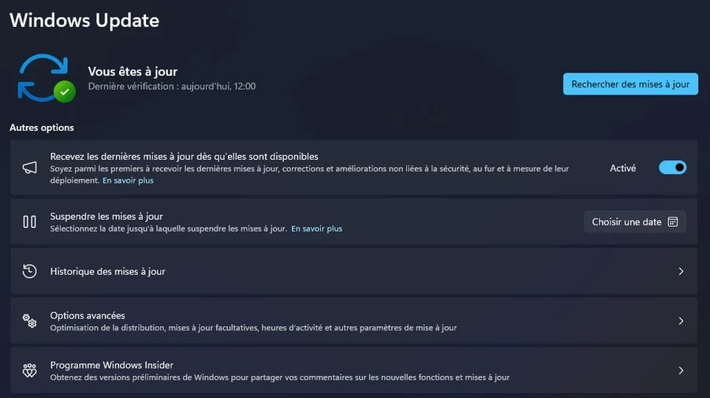
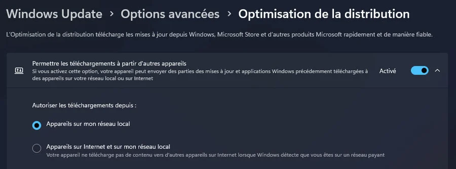

1
Windows : Options avancées
Paramètres › Windows Update › Options avancées
Ouvre Paramètres › Windows Update, puis Options avancées. Sa description cite justement l'« Optimisation de la distribution ».

Pas de serveur central : le fichier est coupé en morceaux, et chaque ordinateur qui le reçoit le renvoie aux autres. Plus on est nombreux, plus ça va vite.

D'habitude, quand tu télécharges un fichier, tu le récupères sur un serveur : un seul gros ordinateur qui l'envoie à tout le monde. Si trop de gens le demandent en même temps, il sature et tout le monde attend. Avec le pair-à-pair (P2P, peer-to-peer en anglais), il n'y a plus de serveur central : chaque ordinateur qui télécharge devient aussi une source pour les autres.
Le fichier est découpé en petits morceaux. Tu les récupères chez plusieurs ordinateurs à la fois, dans le désordre, puis ton logiciel les remet en ordre et vérifie qu'aucun n'est abîmé.
Le principeDès que tu as un morceau, tu peux le passer à quelqu'un d'autre. Celui qui a le fichier complet et continue de le partager s'appelle un « seeder » (une source).
Le partageAvec un serveur, chaque nouvelle personne ralentit les autres. En P2P, chaque nouvelle personne ajoute une source : c'est l'inverse.
Le point fortLe P2P est une technique, comme l'e-mail. Ce qui est interdit, c'est de télécharger ou partager des films, musiques ou jeux protégés sans autorisation.
La loiLe P2P tourne déjà dans ton PC Windows, pour les mises à jour. Voici où le voir (et le régler), puis comment télécharger un vrai fichier en torrent, légalement.
Ouvre Paramètres › Windows Update, puis Options avancées. Sa description cite justement l'« Optimisation de la distribution ».

Dans Options supplémentaires, ouvre Optimisation de la distribution. L'interrupteur Permettre les téléchargements à partir d'autres appareils active le pair-à-pair ; choisis Appareils sur mon réseau local (les PC de ta maison) ou sur Internet et sur mon réseau local.

Installe un logiciel libre comme qBittorrent ou Transmission. Sur le site d'Ubuntu, prends le lien BitTorrent des téléchargements alternatifs, ouvre le fichier `.torrent` : les morceaux arrivent de plusieurs ordinateurs à la fois.
Ubuntu, Debian et beaucoup d'autres proposent leurs images en torrent officiel : souvent plus rapide que le serveur, et tu aides les suivants.
L'Optimisation de la distribution récupère les mises à jour chez les autres PC de la maison : téléchargées une fois, partagées ensuite.
Syncthing (libre) garde tes dossiers à jour entre ton PC, ton portable et ton NAS, directement d'appareil à appareil.
LocalSend (libre) envoie photos et vidéos d'un appareil à l'autre sur le même Wi-Fi, comme AirDrop, sans câble ni compte.
En 2010, Twitter a déployé son code avec BitTorrent (outil « Murder ») : de 40 minutes à 12 secondes sur des milliers de serveurs.
Le pair-à-pair est partout, souvent sans qu'on le sache. Quelques outils libres et gratuits pour s'en servir volontairement.
Bon pour : télécharger des fichiers .torrent légaux (Linux, logiciels libres) ; Transmission est l'équivalent plus léger.
Bon pour : les mises à jour partagées entre les PC de la maison, sans rien installer.
Bon pour : garder tes dossiers identiques sur plusieurs appareils sans passer par un cloud.
Bon pour : l'AirDrop de tout le monde : d'un appareil à l'autre sur le même Wi-Fi.

Chaque vidéo RepoPop Décode t'explique un sujet IA ou tech en moins d'une minute, avec sa fiche complète comme celle-ci.